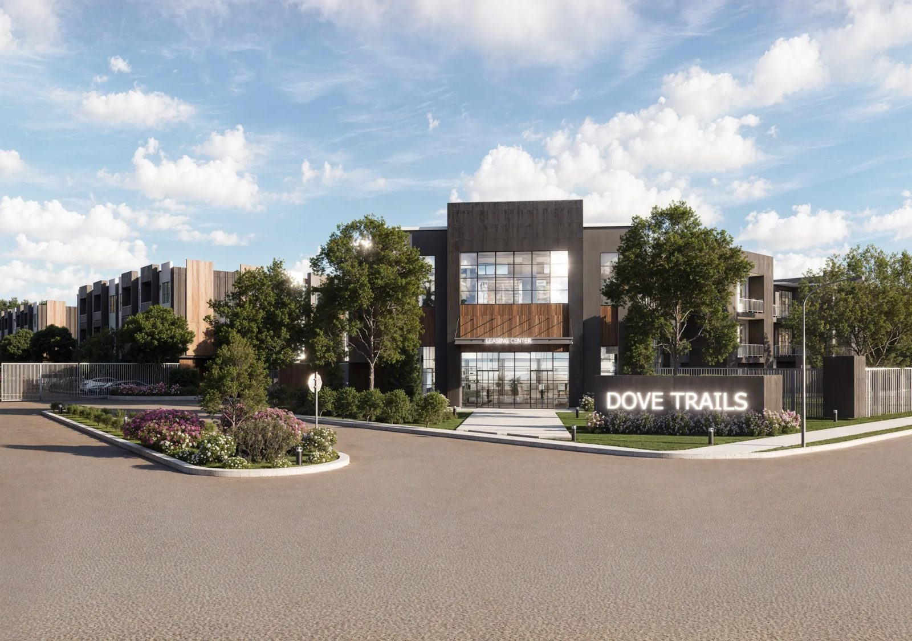

Dove Trails
Sponsored and managed by Z-Co Development CorpA real estate development candidate whose participation structure remains subject to existing agreements.

Planned opportunityAbout Dove Trails
A real estate development candidate whose participation structure remains subject to existing agreements.
Concept renderings illustrate the proposed project; final designs may change. This is a concept pipeline entry only. It is not an open offering, an investment recommendation, or a confirmation of ethical review or approval. Availability, terms, and eligibility will be defined in the applicable offering documents.
Z-Co Development Corp
Z-Co Development Corp is a privately held, vertically integrated real estate company. Founded by Mike Butte in 2003, the firm has completed more than 50 projects across six asset classes, through multiple economic cycles, with zero abandonments.
About the sponsor ↗Terms are not yet published.
Offering structure, capital requirements, investor economics, fees, risks, and any ethical review status must be established before participation. No investment terms are presented here. Offering materials are provided to eligible investors on request.
Risk disclosures ↗Ownership with Oversight.
Our proposed oversight model follows a venture from initial review through execution and exit: feasibility, budget and capital structure review, milestone reporting, and defined responsibilities and corrective actions.
Dashboard preview ↗